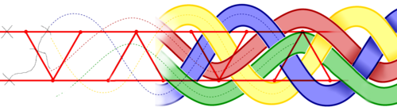

הבית של האתר > יצירת דגם קשרים קלטיים: המדריך האולטימטיבי
יצירת דגם קשרים קלטיים: המדריך האולטימטיבי
תוך שעה בערך, תלמדו איך לצייר דגם קשרים בסגנון קלטי או ערבי, כמו אלה שבאיורי השוליים בספרי תנ"ך או קוראן, כגון הספר של קלס, או בקעקועים שבטיים.

מסמכים מצורפים:
פוסטר להדפסה (poster).
אם אתם מורים, אתם מוזמנים ללמד את השיטה בכיתה. הדפיסו את הפוסטר לצורך העברת השיטה.
מצגת אינטראקטיבית שבה אני משתמש לכנסים שלי.